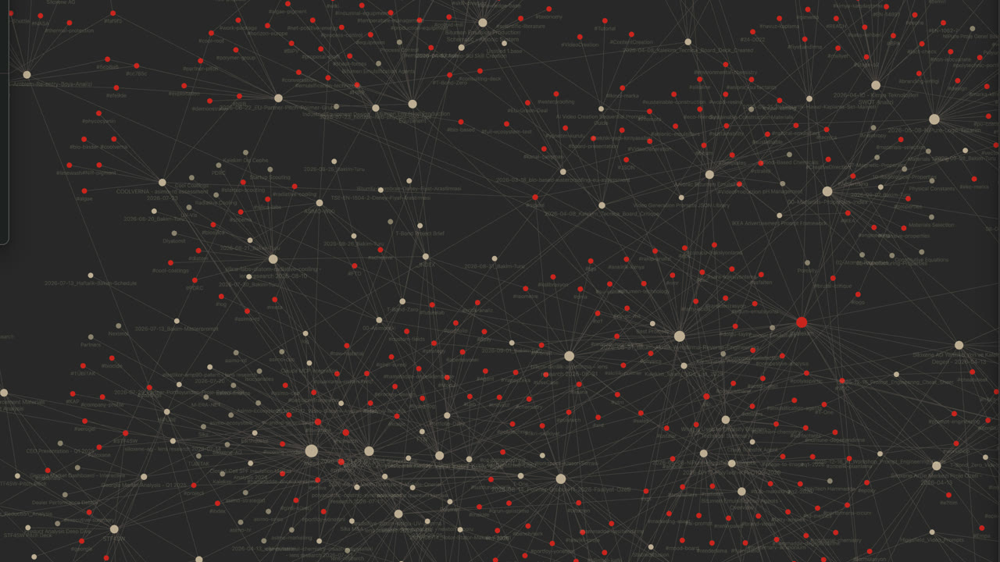

AI automations that actually do the work.Gerçekten iş yapan yapay zekâ otomasyonları.
Distilled information, shipped as working systems — quotes, follow-ups, reports and order flows that run inside real businesses. Not demos. Production.Damıtılmış bilgi, çalışan sistemlere dönüşüyor — teklif, müşteri takibi, raporlama ve sipariş akışları gerçek işletmelerin içinde işliyor. Demo değil; sahada, üretimde.
A second brain: every conversation saved, tagged, recalledİkinci beyin: her konuşma kaydedilir, etiketlenir, geri çağrılır
Every conversation with the systems on this page — every Claude session, every agent report — lands in an Obsidian vault as a dated, tagged note. Zettelkasten-style links turn the notes into a map I can ask questions to, fly through in 3D, and scan before the next idea.Bu sayfadaki sistemlerle yapılan her konuşma — her Claude oturumu, her ajan raporu — Obsidian'a tarihli ve etiketli bir not olarak düşer. Zettelkasten tarzı bağlantılar notları soru sorabildiğim, 3B'de içinde gezdiğim ve bir sonraki fikirden önce taradığım bir haritaya çevirir.
Claude CodeObsidianmarkitdown
CaptureYakala
Conversations, agent session reports and PDFs are written into the vault automatically as Markdown — date, skill and tags in the front matter. Nothing is typed twice.Konuşmalar, ajan oturum raporları ve PDF'ler kasaya otomatik olarak Markdown notu olarak yazılır — ön bilgi alanında tarih, skill ve etiketler. Hiçbir şey iki kez yazılmaz.
Zettelkasten
Tag + linkEtiketle + bağla
Atomic notes, front-matter tags and [[wiki-links]] between them — 170+ notes and 350+ links today. New notes link back to old ones, so a topic leaves a trail instead of a pile.Atomik notlar, etiketler ve aralarındaki [[wiki-bağlantıları]] — bugün 170+ not, 350+ bağ. Yeni notlar eskilere bağlanır; bir konu yığın değil iz bırakır.
asimo-brain
RecallGeri çağır
asimo-brain builds a 3D knowledge galaxy from the vault and answers questions by voice or text — from the notes only. Ask, and the camera flies to the source cluster; say “remember that…” and a new note lands live.asimo-brain kasadan 3B bir bilgi galaksisi kurar; sesle ya da yazıyla sorulara yalnızca notlardan cevap verir. Sor, kamera kaynak kümeye uçar; “bunu hatırla…” de, yeni not anında yerini alır.
OutcomeSonuç
170+ notes, one question away170+ not, tek soru uzakta
Two uses. Visual: the galaxy shows where knowledge is dense, where it is thin, which notes are orphans. Effective: before any new idea, a scan of the map says what was already tried, by which skill, with what result — every session starts from what is already known.İki kullanım. Görsel: galaksi bilginin nerede yoğun, nerede seyrek, hangi notların yetim olduğunu gösterir. Etkin: yeni bir fikirden önce haritayı taramak neyin, hangi skill ile, hangi sonuçla denendiğini söyler — her oturum bilinenin üstünden başlar.

Obsidian graph view of the vault — notes as dots, tags in red, links as lines. The same map asimo-brain flies through in 3D.Kasanın Obsidian graf görünümü — notlar nokta, etiketler kırmızı, bağlar çizgi. asimo-brain'in 3B'de içinde gezdiği harita aynı.
The morning portfolio briefingSabah portföy brifingi
At 08:00 a scheduled agent reads every active project, task and date, applies the rules, and writes not “what happened” but “what to do today”.08:00'de zamanlanmış bir ajan tüm aktif projeleri, görevleri ve tarihleri okur, kuralları uygular ve “ne oldu” değil “bugün ne yapmalısın” yazar.
asimo-portfolioAsana MCP
PullÇek
All active projects, their tasks, owners and dates — in one pass, every morning, without opening a single board.Tüm aktif projeler, görevleri, sorumluları ve tarihleri — her sabah tek geçişte, tek bir pano açmadan.
asimo-portfolio
RulesKurallar
Delay threshold, missing technical data sheet, capacity clash between projects — each rule turns a fact into a to-do with a name on it.Gecikme eşiği, eksik teknik föy, projeler arası kapasite çakışması — her kural bir olguyu üzerinde isim olan bir yapılacağa çevirir.
Obsidianasimo-brain
Archive + linkArşivle + bağla
The briefing is saved as a dated note and linked to the previous days — so it also feeds the second brain.Brifing tarihli bir not olarak kaydedilir ve önceki günlere bağlanır — böylece ikinci beyni de besler.
OutcomeSonuç
45–60 → 0 min45–60 → 0 dk
The briefing writes itself before the day starts; reading it takes two minutes.Brifing gün başlamadan kendini yazar; okumak iki dakika sürer.
The daily raw-material approval routineGünlük hammadde onay rutini
New raw-material items land on a project board every day. Each morning the agent scans them against the procedure, flags what is missing and leaves one approval list — the human only approves.Her gün proje panosuna yeni hammadde kalemleri düşer. Ajan her sabah bunları prosedüre göre tarar, eksikleri işaretler ve tek bir onay listesi bırakır — insan yalnızca onaylar.
asimo-portfolioAsana MCP
ScanTara
Every morning the new items on the raw-material project are pulled through the Asana MCP: name, owner, attachments, due date.Her sabah hammadde projesindeki yeni kalemler Asana MCP ile çekilir: ad, sorumlu, ekler, tarih.
gate-analysis
Check against the procedureProsedürle karşılaştır
Each item is checked against the innovation procedure's gate rules: missing evidence, tasks closed without a record, wrong owner — flagged with the reason, never fixed silently.Her kalem inovasyon prosedürünün kapı kurallarıyla karşılaştırılır: eksik kanıt, kayıtsız kapatılan görev, yanlış sorumlu — gerekçesiyle işaretlenir, sessizce düzeltilmez.
Asana MCP
One listTek liste
The result is a single approval list, the reason next to every flag. Approve, and the board is updated — nothing else is touched.Sonuç, her işaretin yanında gerekçesi olan tek bir onay listesi. Onayla, pano güncellensin — başka hiçbir şeye dokunulmaz.
OutcomeSonuç
16 → 5 min a daygünde 16 → 5 dk
−65 % a day, about 3.7 hours a month — measured on real board records, five days a week.Günde %65 azalma, ayda ~3,7 saat — gerçek pano kayıtlarıyla, haftada beş gün ölçüldü.
Project effectiveness, measured with gate analysisKapı analizi ile proje etkinliği ölçümü
One project board goes in. Every main task and subtask is scanned, every comment is read and tied to its task, delays are located, and compliance with the plan is scored — as an HTML + PDF report.Bir proje panosu girer. Her ana görev ve alt görev taranır, her yorum okunup görevine bağlanır, gecikmelerin nerede yaşandığı bulunur ve plana uyum puanlanır — HTML + PDF rapor olarak.
15 min to the finished report — by hand, about 2 days.Bitmiş rapora 15 dk — elle yaklaşık 2 gün.
gate-analysisAsana MCP
Scan the boardPanoyu tara
76 main tasks and 71 subtasks pulled with their owners, dates, closures and attachments — one pass, nothing skipped.76 ana görev ve 71 alt görev; sorumlu, tarih, kapatma ve ekleriyle tek geçişte çekilir — hiçbiri atlanmaz.
gate-analysis
Read the commentsYorumları oku
Every comment is read and linked to the task it belongs to, so who did what — and who only said they did — is visible next to each gate.Her yorum okunur ve ait olduğu göreve bağlanır; kim ne yaptı — ve kim yalnızca yaptığını söyledi — her kapının yanında görünür.
gate-analysis
Delays and plan complianceGecikmeler ve plana uyum
Tasks are mapped to the procedure's five gates: closures without evidence, bulk closures on one day, where the delay actually sits, and how far the board follows the plan — each with the record that proves it.Görevler prosedürün beş kapısına eşlenir: kanıtsız kapatmalar, tek günde toplu kapatmalar, gecikmenin gerçekte nerede olduğu ve panonun plana ne kadar uyduğu — her biri kanıtlayan kayıtla.
OutcomeSonuç
2 days → 15 min2 gün → 15 dk
A gate-by-gate report with actions, ready for the review board — the same evening the board was opened, instead of two working days later.Kurula hazır, aksiyonlu, kapı kapı bir rapor — iki iş günü sonra değil, panonun açıldığı akşam.
From a materials idea to a physics-checked, funding-aware DOEBir malzeme fikrinden fizikle sınanmış, fon-manzaralı bir DOE'ye
One idea goes in. Physics refutes or proves it, the literature and patent world is scanned, the EU funding landscape is mapped, and a design of experiments comes out — with the clock on every step.Bir fikir girer. Fizik onu çürütür ya da ispatlar, makale ve patent dünyası taranır, AB fon manzarası çıkarılır ve bir deney tasarımı (DOE) çıkar — her adımın süresi çizginin üstünde.
~20 min end to end — by hand, about 2 days.Uçtan uca ~20 dk — elle yaklaşık 2 gün.
5mindkby hand ~3 helle ~3 sa
newton
Idea → physics verdictFikir → fizik hükmü
newton runs the idea through every property on Wikipedia's List of materials properties and the governing equations behind them (JKR, Kendall, Dahlquist, Euler, Fick, WLF…), solves them numerically and returns PROVEN / PARTIAL / REFUTED — then ranks the candidate materials.newton fikri Wikipedia'daki List of materials properties haritasındaki tüm özelliklerden ve arkalarındaki denklemlerden (JKR, Kendall, Dahlquist, Euler, Fick, WLF…) geçirir, sayısal çözer ve İSPAT / KISMİ / ÇÜRÜTME hükmü verir — sonra aday malzemeleri sıralar.
11mindkby hand ~1 dayelle ~1 gün
lens-research
Papers + patents, scoredMakale + patent, puanlı
Five sources in parallel — OpenAlex, Lens.org, Google Patents, WIPO PATENTSCOPE, Espacenet — de-duplicated and rated with separate fit scores for papers and patents. 400 items scanned, the 15 that matter kept.Beş kaynak paralel — OpenAlex, Lens.org, Google Patents, WIPO PATENTSCOPE, Espacenet — tekilleştirilir, makale ve patent için ayrı uyum puanıyla sıralanır. 400 kayıt taranır, işe yarayan 15'i kalır.
17mindkby hand ~½ dayelle ~½ gün
eu-project-research
EU funding landscape + gapAB fon manzarası + boşluk
Past and running projects on the same idea across CORDIS / Horizon, M-ERA.NET, EUREKA and EIT: coordinators, partners, budgets, project sites — and a gap analysis against the idea, delivered as an Excel landscape report.Aynı fikir üzerine CORDIS / Horizon, M-ERA.NET, EUREKA ve EIT'de geçmiş ve süren projeler: koordinatörler, ortaklar, bütçeler, proje siteleri — ve fikre karşı boşluk analizi; Excel manzara raporu olarak.
20mindkby hand ~3 helle ~3 sa
newtonOutcomeSonuç
2 days → 20 min2 gün → 20 dk
Formulations from the 80+-scored papers and patents become a design of experiments: raw materials, levels, tests — as an Excel DOE ready for the lab.80+ puan alan makale ve patentlerdeki formülasyonlar deney tasarımına dönüşür: hammaddeler, seviyeler, testler — laboratuvara hazır bir Excel DOE.
Screening DOE over Polymer · Filler · Solvent → Elasticity > 200 % → Box-Behnken cube at Polymer = 0.5. Illustrative only — does not reflect real data.Polymer · Filler · Solvent üzerinde tarama DOE'si → Elasticity > 200 % → Polymer = 0,5'te Box-Behnken küpü. Gösterim amaçlıdır; gerçeği yansıtmaz.
Two funded EU projects, one skill chainİki fonlanan AB projesi, tek skill zinciri
The same skills that run daily operations also write research proposals. This is the chain that turned two ideas into funded M-ERA.NET projects — and their websites.Günlük operasyonu yürüten aynı skill'ler, araştırma projesi de yazıyor. İki fikri fonlanan M-ERA.NET projelerine — ve web sitelerine — dönüştüren zincir bu.
asimo-rdnewtonlens-researchacademic
Idea → proposalFikir → proje dosyası
asimo-rd is triggered with a materials idea. lens-research scans papers and patents, the academic skill drafts the science case, gap analysis and work packages — a full consortium proposal.asimo-rd bir malzeme fikriyle tetiklenir. lens-research makale ve patentleri tarar, academic skill bilimsel gerekçeyi, boşluk analizini ve iş paketlerini yazar — eksiksiz bir konsorsiyum dosyası.
asimo-marketing wrote the positioning; asimo-software scoped both sites and shipped them through the gstack factory with a security review; impeccable drove the design and Higgsfield produced the visuals — live, linked below.asimo-marketing konumlandırmayı yazdı; asimo-software iki siteyi kapsamlayıp gstack fabrikasında güvenlik incelemesiyle yayına aldı; tasarımı impeccable, görselleri Higgsfield üretti — ikisi de yayında, aşağıda bağlı.
of public research funding brought to Kalekim — the enterprise coordinating both consortia — across the 2024 and 2026 rounds. The skill chain wrote the proposals; Kalekim's R&D centre — its laboratories, its scientific team and its track record as coordinator — carried equal weight in winning them.2024 ve 2026 turlarında, iki konsorsiyumun da koordinatörü olan Kalekim'e kazandırılan kamu Ar-Ge fonu. Proje dosyalarını skill zinciri yazdı; Kalekim'in Ar-Ge merkezi — laboratuvarları, bilimsel ekibi ve koordinatör olarak geçmişi — kazanılmalarında eşit ağırlıkta pay sahibi.
A 30-second ad film, without a shooting dayÇekim günü olmadan 30 saniyelik reklam filmi
One idea, a script, a storyboard, generated scenes, a cut — and a gated screening on this site (nav → GP Coating Ad). The idea belongs to Gülden Polat.Bir fikir, senaryo, storyboard, üretilmiş sahneler, kurgu — ve bu sitede kapılı gösterim (menü → GP Coating Reklamı). Fikir Gülden Polat'a aittir.
asimo-marketing
Idea → scriptFikir → senaryo
A one-paragraph idea becomes a script and a shot-by-shot storyboard with the brand's tone locked in.Bir paragraflık fikir, markanın tonu sabitlenmiş bir senaryoya ve plan plan storyboard'a dönüşür.
Seedance 2.5 MCPHiggsfield MCP ↗
ScenesSahneler
Every shot is generated from the storyboard. A retake is a prompt, not a crew.Her plan storyboard'dan üretilir. Tekrar çekim bir ekip değil, bir prompt.
openmontage
CutKurgu
Pipeline manifest, edit decisions, music bed, end card, poster — the cut is a reproducible recipe, not a timeline in someone's head.Pipeline manifestosu, kurgu kararları, müzik yatağı, kapanış kartı, poster — kurgu birinin kafasındaki zaman çizgisi değil, tekrarlanabilir bir reçete.
OutcomeSonuç
0 shooting days0 çekim günü
From idea to screening in [hours — to fill]; a 30 s film and a poster, opened here with an e-mail link.Fikirden gösterime [süre — doldurulacak]; 30 sn film ve poster, burada e-posta bağlantısıyla açılıyor.
This website, built the same wayBu web sitesi de aynı yöntemle yapıldı
One brief. A design system and a bilingual page, gated content behind an e-mail link, a form, analytics with consent, KVKK, a security pass, four browsers — then GitHub → Hostinger, automatically.Tek brief. Tasarım sistemi ve iki dilli sayfa, e-posta bağlantısıyla kapılı içerik, form, rızalı analitik, KVKK, güvenlik taraması, dört tarayıcı — sonra GitHub → Hostinger, otomatik.
asimo-softwareimpeccable ↗
Brief → design systemBrief → tasarım sistemi
Palette, type ramp, spacing and motion written down once; every page since follows them.Palet, yazı ölçeği, boşluk ve hareket bir kez yazıldı; o günden beri her sayfa onlara uyuyor.
An e-mail magic link with server-signed tokens, a form that mails, analytics only after consent, a privacy notice — all on plain PHP, no framework.Sunucuda imzalanan e-posta bağlantısı, e-posta gönderen form, yalnızca rızadan sonra analitik, aydınlatma metni — hepsi düz PHP, framework yok.
security-reviewgstack
Security + browsersGüvenlik + tarayıcılar
CSP, HSTS, no inline scripts, gated originals never served directly; Chrome, Safari, Firefox and iPhone checked with Playwright before every deploy.CSP, HSTS, satır içi script yok, kapılı orijinaller asla doğrudan sunulmaz; her yayından önce Chrome, Safari, Firefox ve iPhone Playwright ile denendi.
OutcomeSonuç
Live the same dayAynı gün yayında
About 28 hours of joint work in total, measured from the session logs. The site itself is the evidence.Oturum kayıtlarından ölçülen toplam ~28 saatlik ortak çalışma. Kanıt sitenin kendisi.
A 36-slide masterclass from one briefTek brief'ten 36 slaytlık masterclass
Audience, length, format and goal in one paragraph. Research, structure, 36 slides with speaker notes, a timer and a lab guide — published here in EN and TR behind the gate (nav → Masterclass).Kitle, süre, format ve amaç tek paragrafta. Araştırma, kurgu, sunucu notlu 36 slayt, kronometre ve lab kılavuzu — burada EN/TR olarak kapının arkasında yayında (menü → Masterclass).
asimo-marketing
BriefBrief
Who is in the room, how long, in what format, to what end — four answers, one paragraph.Salonda kim var, ne kadar süre, hangi formatta, hangi amaçla — dört cevap, tek paragraf.
consulting-deck-stylepptx
Research → structure → slidesAraştırma → kurgu → slaytlar
Consulting-style storyline first, then the slides: one message per slide, evidence under it, no decoration.Önce danışmanlık tarzı hikâye akışı, sonra slaytlar: her slaytta tek mesaj, altında kanıt, süs yok.
Notes for the speaker, a clock on every section, a hands-on guide for the lab part — and an HTML deck that runs in the browser, EN and TR.Sunucuya notlar, her bölümde saat, uygulama kısmı için kılavuz — ve tarayıcıda çalışan EN/TR bir HTML deck.
The deck's own slide says it: “I did not make this presentation.”Deck'in kendi slaydı söylüyor: “Bu sunumu ben yapmadım.”
Distilled Information
The first customer was my own workday. Since 2023 I've followed a 200+ video playlist on AI and automation — and distilled it, piece by piece, into the working systems on this page. You don't need to watch those hours: the distilled version adapts straight into your business.İlk müşteri kendi mesaimdi. 2023'ten beri yapay zekâ ve otomasyon üzerine 200'den fazla videoluk bir listeyi takip ediyorum — ve onu parça parça damıtıp bu sayfadaki çalışan sistemlere dönüştürdüm. O saatleri izlemenize gerek yok: damıtılmış hâli, doğrudan işinize adapte edilir.
One working session to find the process where automation pays back first.Otomasyonun kendini en önce geri ödeyeceği süreci bulmak için tek bir çalışma oturumu.
BuildKurulum
A working automation on your real data, tested with the people who will use it.Gerçek verinizle çalışan, onu kullanacak insanlarla test edilmiş bir otomasyon.
RunDevreye alma
Shipped into daily use, monitored, and improved as your business changes.Günlük kullanıma alınır, izlenir ve işiniz değiştikçe geliştirilir.
Tell me where the manual work is.Manuel iş nerede, anlatın.